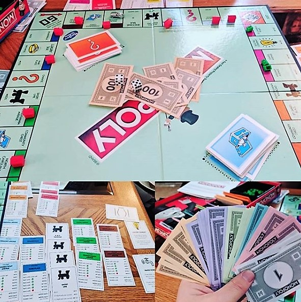

About Me
Let me tell you a few things about myself.
Words to live by:
It is important to draw wisdom from different places. If you take it from only one source it becomes rigid and stale.
~ Uncle Iroh, Avatar: The Last Airbender
You can use logic to justify almost anything. That's its power. And its flaw.
~ Captain Kathryn Janeway, Star Trek: Voyager
Thing 1: Yarn Crafts
Crochet? Knitting? Spinning yarn? I can do it all.
When it comes to picking members of post-apocalyptic survival team, I'm your man. Not only can I fashion protective garments to shield you from the cold, I can also manufacture my own supplies. Lame jokes aside, I do really enjoy unwinding with a crochet hook and a nice skein of yarn. I taught myself how to knit and crochet when I was fifteen. And shortly after I began teaching myself how to spin yarn.
Thing 2: Gardening
Like Hobbits, I too have a love for all things that grow.
When the season is right, and the space is available, there is no place I'd rather be than spending time in the garden. I love spending time with my hands in the soil, working to improve and enhance production. I also enjoy taking a piece of nature inside. When winter comes, I like to keep my house filled with as much foliage as it can handle.
Thing 3: Game Night Champion
Be it board, card, or party games.... I will destroy you.
I am an avid lover of all tabletop and party games. If I had a top- list, it would have to include (in no particular order): Forbidden Island, Bananagrams, Munchkin, Quarriors, and Bang. However, there are many more that could be included on that list.